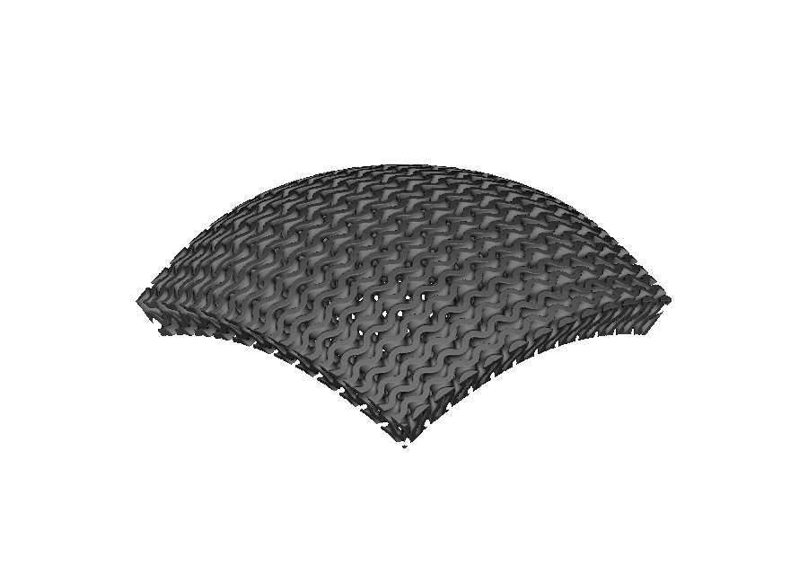
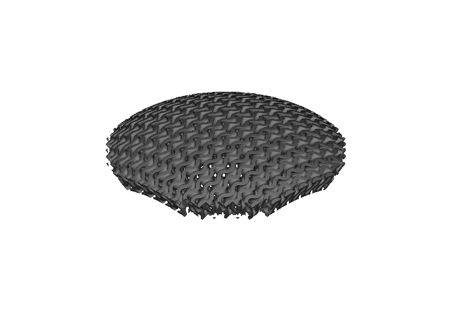
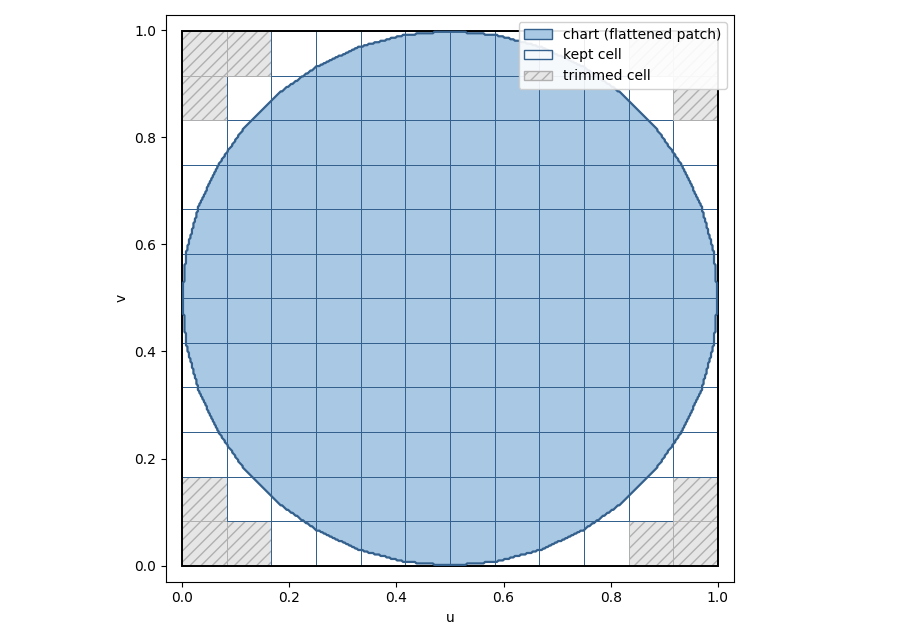
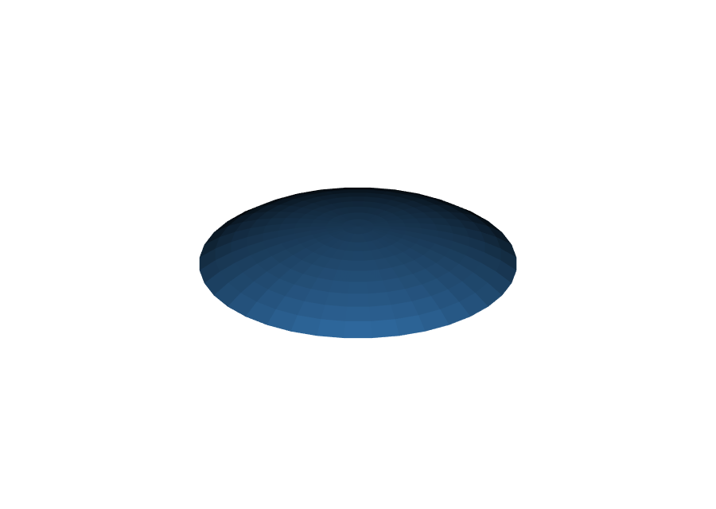
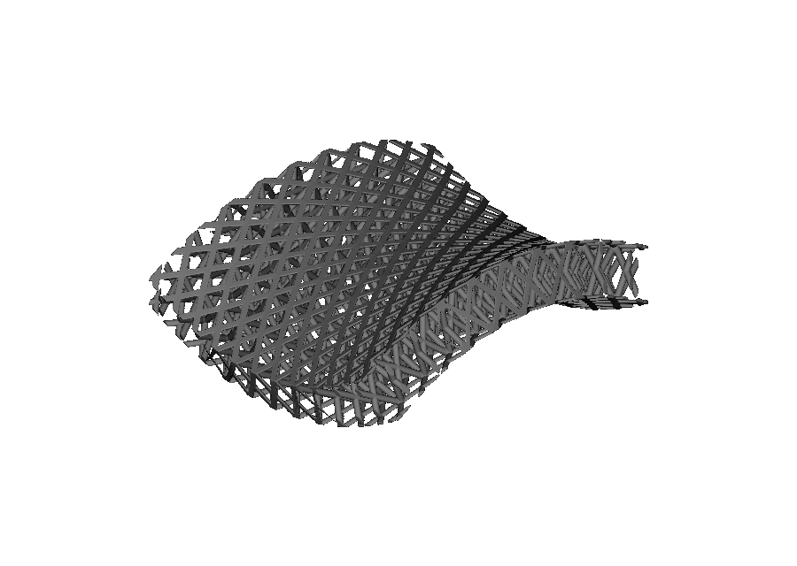
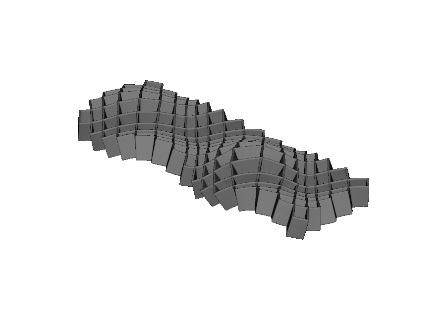
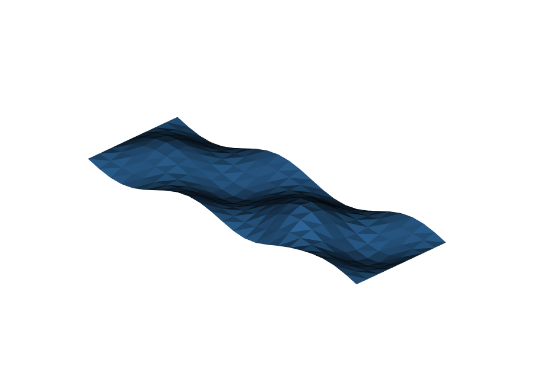
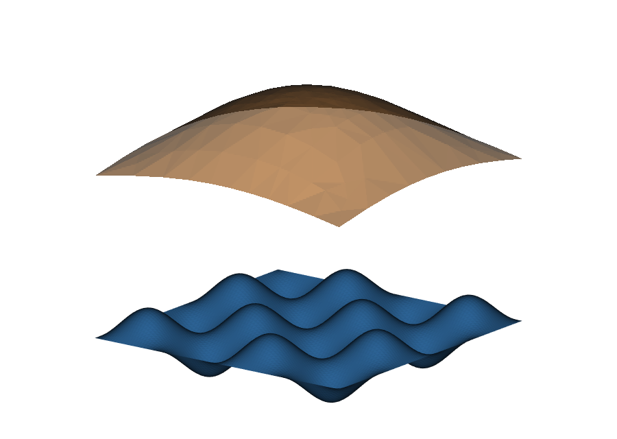
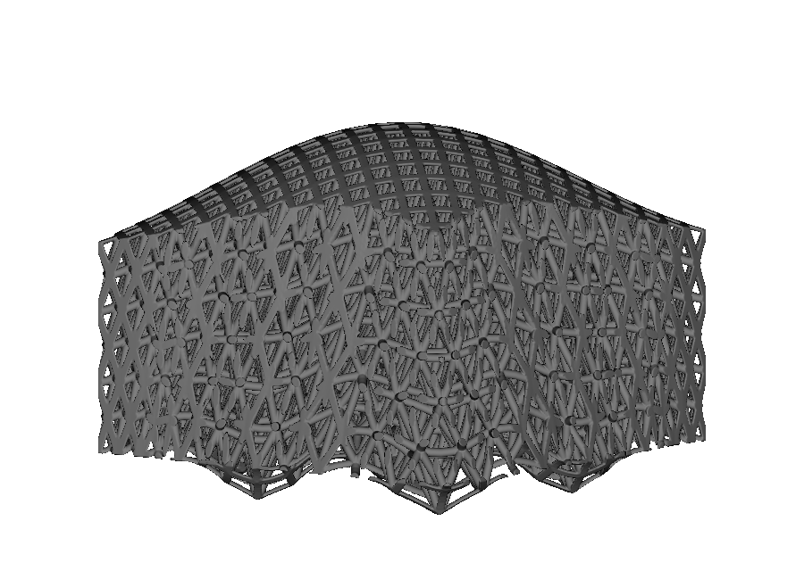

Map lattices onto triangle meshes#
Use this guide when the surface you want to lattice is a scan, an STL region, or a mesh made by your own script rather than CAD. A triangle mesh is simply a list of points connected by triangles. TriangleMeshSurface turns one open mesh patch into a surface that OpenVCAD can follow: it creates a flat internal coordinate system for the patch, then mm.cell_map_from_surface(...) and mm.cell_map_between_surfaces(...) can use it just as they use a CADFace in the CAD guide. You do not need CadQuery for this workflow.
surface = pv.TriangleMeshSurface(vertices, triangles)
cell_map = mm.cell_map_from_surface(surface, cells=(12, 12, 1), height=4.0)
root = mm.gyroid(cell_map, wall_thickness=0.7)
Here, vertices is a list of pv.Vec3 points and triangles is a list of triples of integer indexes that point into vertices. An imported SurfaceMesh exposes the same two arrays.
What the patch must be#
The patch must be an open disk: one connected piece of surface with one outer edge, no holes, and consistently ordered triangles. Think of a single sheet cut from the surface, not a complete solid. The top of a part, a scanned region, or a height-field strip usually qualifies. A closed solid, a ring-shaped patch, or two separate pieces does not; each produces a specific error described in Troubleshooting. You can make a closed solid usable by extracting one open region, as shown below.
The patch’s shape is unrestricted. Circular, elongated, off-center, and irregular outlines all work — the boundary does not need to be square, straight-edged, or convex.
Two practical freedoms follow:
Mesh detail and lattice cells are separate. A 14 × 14-vertex patch can drive a
(12, 10, 1)cell map, while a 100 × 100-vertex scan can drive a(6, 6, 2)map. More mesh triangles help the map follow the source surface; thecellssetting controls the lattice count.Triangle order sets the height direction. The order of the three indexes in each triangle defines which side is outward. Positive
heightgrows the map along that side. If it grows the wrong way, reverse the triangle order or use a negativeheight. OpenVCAD smooths the direction across triangle edges, so the offset does not step from facet to facet.
How the patch becomes a chart#
To place cells on an irregular surface, OpenVCAD first makes a 2D chart: a flat coordinate system for the patch. This flattening approximately preserves local angles and keeps the patch’s natural outline. A circular patch becomes a round chart and a long strip becomes a long chart. The chart sits inside the rectangle reported by surface.uv_bounds; its longer side is normalized to 1 and its aspect ratio is preserved. That helps cells remain close to square instead of stretching the patch into a forced square.
This process preserves angles better than areas. Wall thickness and beam radius stay in millimeters everywhere, but strongly curved patches such as deep pockets or nearly closed caps can still make cells vary in size. The map validates the resulting volume when you create it.
Trimming to the true boundary#
A non-rectangular chart leaves unused space inside its bounding rectangle. The trim argument of cell_map_from_surface(...) chooses what happens at that margin. It accepts a pv.TrimMode value or the matching string:
"boundary"(the default) — clips the lattice at the patch’s actual edge. Partial edge cells are cut where the surface ends, so a circular patch has a clean round rim."cells"— keeps or removes each complete cell. The result has a stepped edge, but every surviving boundary cell stays whole."none"— keeps the full rectangular grid, including cells beyond the patch boundary.
{kind=link}

trim="none": corner cells extrapolate past the round edge
trim="cells": whole cells survive, so the edge steps{kind=link}

trim="boundary" (default): a smooth clip at the true edgeAll three options start from the same chart. In the two trimming modes, cells entirely outside the outline are removed. At cells that cross the edge, "cells" keeps the whole cell and "boundary" cuts it to the real curve; "none" keeps everything.
{kind=link}

For cell_map_between_surfaces(...), the same trim choice applies. A point is kept only where it falls on both patches, so the lattice fills their shared footprint. To inspect the result, use cell_map.trim_mode, cell_map.has_boundary_trim, and cell_map.validate().trimmed_element_count (the number of fully removed cells).
One restriction: warp_cell_map(...) cannot warp a map made with trim="boundary", because the warp could move cells past the stored edge. Warp an untrimmed map instead, or use trim="cells" when changing cell spacing matters more than a smooth edge.
Choosing the chart orientation#
The chart’s U axis becomes the lattice’s first logical direction. It controls the direction of beams, plates, and grading fields on the surface. You can either accept the default or choose it explicitly:
Default: U follows the patch’s long direction. An elongated strip therefore gets U along its length. Near-round patches receive a repeatable automatic direction.
Explicit: pass
u_axis_hint=pv.Vec3(...). The world-space direction is projected onto the patch and U is rotated to follow it.
surface = pv.TriangleMeshSurface(vertices, triangles, u_axis_hint=pv.Vec3(1.0, 0.0, 0.0))
Use the hint whenever the lattice direction matters. Always use it when pairing a mesh with a CAD face, as shown below.
Map a procedural patch#
The procedural examples use helpers in _triangle_surface_examples.py: disk_surface(...) makes a round patch, while grid_surface(...) and indexed_grid(...) make rectangular patches. This first example creates a round dome mesh and covers it with a gyroid lattice:
import math
import pyvcad as pv
import pyvcad_metamaterials as mm
import pyvcad_rendering as viz
from _triangle_surface_examples import disk_surface
RADIUS = 15.0
def spherical_cap(x, y):
r2 = (x * x + y * y) / (RADIUS * RADIUS)
return 8.0 * math.sqrt(max(0.0, 1.0 - 0.75 * r2))
surface = disk_surface(RADIUS, 10, 36, spherical_cap)
cell_map = mm.cell_map_from_surface(surface, cells=(12, 12, 1), height=4.0)
root = mm.gyroid(cell_map, wall_thickness=0.7)
viz.Render(root)
Each comparison keeps the camera fixed: drag the divider to see the input patch replaced by its lattice. 18_triangle_mesh_dome_gyroid.py turns a shallow, round dome into a gyroid shell. Its TRIM_MODE variable lets you try the three trimming modes with a one-line edit.

Input patch Trimmed gyroid19_triangle_mesh_saddle_octet.py turns a saddle-shaped patch, which rises in one direction and falls in the other, into an FCC beam lattice:

Input patch FCC beam lattice20_triangle_mesh_organic_plate.py turns a long, wavy 3:1 strip into a plate lattice. Its chart keeps the 3:1 aspect ratio, and u_axis_hint keeps U along the long world-space direction:


Input patch Plate latticeSelect a region of an imported mesh#
An imported mesh is often a closed solid with several surface regions, not the one open patch this workflow needs. 21_imported_triangle_mesh_patch.py starts with a domed tile: a domed top, four sides, and a flat bottom. It uses the SurfaceMesh vertices and triangles arrays with helpers from _triangle_surface_examples.py to keep only the top:
select_triangles(...)keeps the upward-facing top face group (normal.z > 0.5).largest_connected_component(...)isolates the largest edge-connected patch.reindex(...)compacts it to its own vertices.
The extracted top is an open disk, so it can go straight into TriangleMeshSurface. The example then makes the gyroid walls thicker from one side of the top to the other with cell_map.logical_position.x. Because the chart keeps the selected outline, the lattice follows the true boundary; the selection does not need to be square or convex.
{kind=link}
{kind=link}
{kind=link}
Choose the selection rule that matches the region boundary. A normal threshold works when the target region meets its neighbors at a visible edge, and largest_connected_component(...) drops stray triangles with the same orientation elsewhere on the mesh. The result must still be one connected patch with one boundary loop.
Pair a mesh with a CAD surface#
CADFace and TriangleMeshSurface can both act as a surface boundary, so cell_map_between_surfaces(...) can fill the space between either combination. 22_between_mesh_and_cad_surfaces.py builds an octet lattice between a wavy triangle-mesh floor and a smooth CAD dome above it. The map’s W direction runs from the mesh at w = 0 to the CAD surface at w = 1.
When one boundary is a mesh and the other is CAD, align their U axes in world space. Automatic alignment can flip directions or swap U and V, but it cannot correct every rotation. In this example the mesh would otherwise be 45° out of step with the dome, which would twist the lattice. u_axis_hint pins the mesh U direction to the CAD face’s U direction:
floor_surface = pv.TriangleMeshSurface( # lower: triangle mesh
floor_vertices, floor_triangles, u_axis_hint=pv.Vec3(1.0, 0.0, 0.0)
)
engineered_surface = pv.CADModel.from_cadquery(engineered_cad).faces[0] # upper: CAD patch
cell_map = mm.cell_map_between_surfaces(floor_surface, engineered_surface, cells=(12, 12, 3))
root = mm.octet(cell_map, beam_radius=0.65)
{kind=link}

{kind=link}

The two boundaries need compatible surface coordinates for the interpolation to remain valid. Patches over the same footprint align cleanly. A periodic CAD cylinder and a non-periodic mesh patch, for example, are not compatible and are rejected.
Once built, these lattices are ordinary OpenVCAD nodes. You can grade them as in the previous guide, combine them in heterogeneous lattices, or send them to a compatible compiler.
Limitations and troubleshooting#
Rejected input topology#
OpenVCAD reports each invalid input with a specific RuntimeError rather than guessing how to repair it:
Input |
Error |
|---|---|
Closed solid (a sphere) |
“the mesh is closed and has no boundary loop” |
Annulus / two boundary loops |
“requires exactly one boundary loop” |
Punctured torus (a handle) |
“requires a genus-0 disk … carries at least one handle” |
Two disconnected disks |
“requires a single connected patch” |
Three triangles on one edge |
“has a non-manifold edge” |
Two fans joined at a point |
“has a non-manifold vertex” |
Repair or extract the patch before construction. For closed solids and multi-region meshes, use the region-selection workflow.
When the flattening cannot keep the natural outline#
Some patches cannot be laid flat without overlapping themselves; a helical strip that wraps more than once is a typical case. Instead of rejecting it immediately, TriangleMeshSurface switches to a fallback mapping that puts the boundary on a circle. The fallback is valid but distorts the shape more, so cells may be less uniform. Its chart outline is also no longer the original patch outline, which means trimming follows the circular chart rather than the mesh edge. Check which mapping was used with:
surface.parameterization_method # "free_boundary_lscm" or "convex_border_mean_value"
If a patch you expected to flatten cleanly uses the fallback, it is usually more curved or twisted than intended. Splitting it into flatter regions often restores the natural-outline chart. Only when both mappings fail is the patch rejected; the error includes both reasons.
Map validation errors#
Making a valid chart does not guarantee that the offset or interpolated volume is valid. Construction always checks the volume for folds or collapsed cells:
“Surface CellMap is folded or singular” —
heightis too large for a concave surface and the offset intersects itself, or a distorted fallback chart collapses cells at the requested resolution. Reduceheight, add cells, or split the patch.“No valid paired-surface correspondence was found” — the two surfaces in
between_surfacescannot be aligned, or their charts slide against each other. The message lists the checks it tried. Use surfaces over a common footprint and make sure both normals point along the intended W direction.
Other limits to keep in mind#
A twisted shell between a mesh and a CAD face usually means the U axes differ by an angle automatic alignment cannot fix. Pin the mesh chart with
u_axis_hint(see the pairing section).Sharp creases become rounded because vertex normals are smoothed. Split the patch at a hard edge when preserving that edge matters.
Deep pockets and nearly closed caps can leave cells uneven even when the map validates. Inspect
cell_map.validate()aspect-ratio diagnostics if uniformity matters.